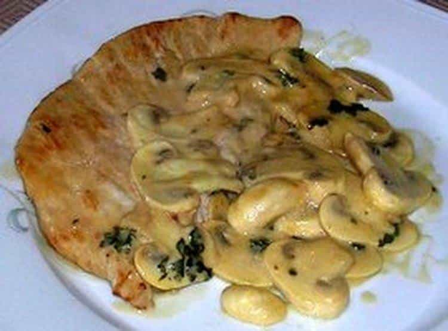
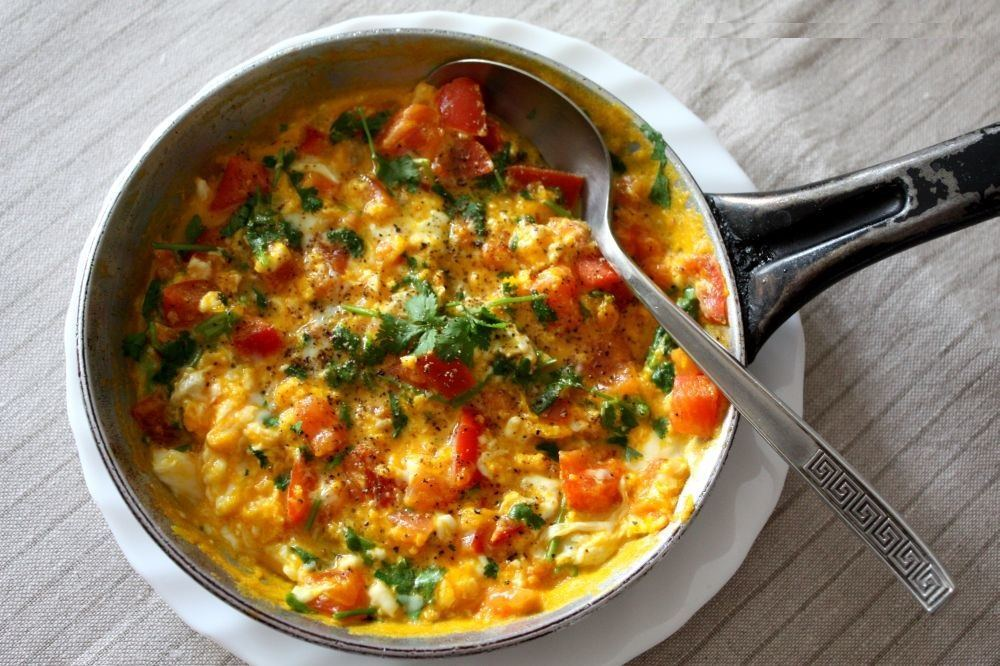
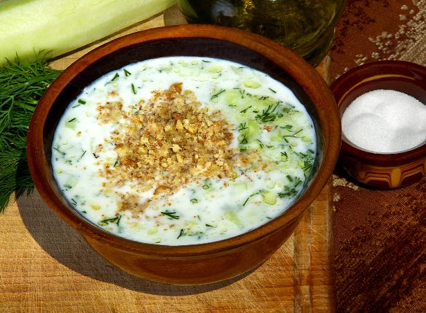
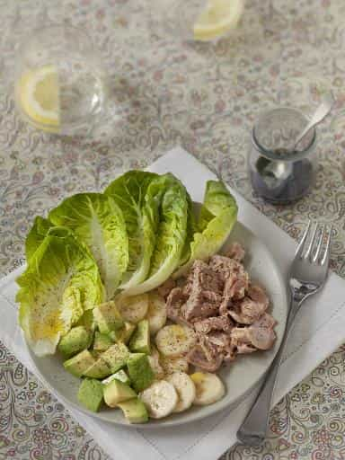
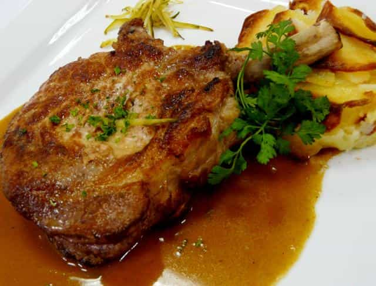
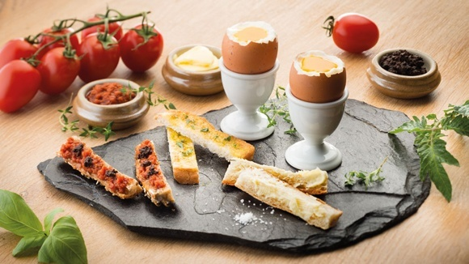
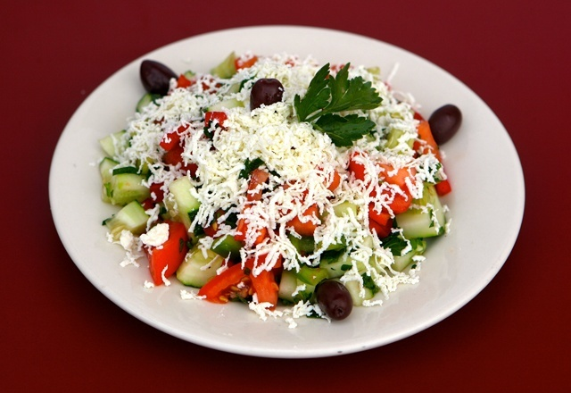

< < < Back
8 Fast And Cheap Meals That Will Get Girls Rushing Into Your Place – Return Of Kings
I lately converted a lot of my dates into faster lays by proposing the great homemade dinner on the second date instead of waiting for the third. Sex is highly implied in this maneuver. You must SELL IT WELL, and make it sound like she could miss the dish of the century. Buy the ingredients, and some extra alcohol if your fridge is not stocked.
Once home, I usually clown around and pretend to be on my imaginary cooking show with her. You can do the same but it is paramount that you include her in the preparation. You can’t have her sitting down and waiting. You are not a slave and while she’s idle, she does the worst thing she can do: she thinks. Keep her busy.
Declare that she is the assistant, boss her around, give her the shitty knife that does not cut, use the imperative, touch her waist, tease her. Built up the tension without attacking too fast. A woman is in in her natural environment in the kitchen. She loves the orders, she is more relaxed, and her nature reveals itself. There are many great dishes you can cook if you ran out of Kratom—here are a few that served me well in the past:
1. Escalope normande

As simple as it gets, it is the pride of my region. A flexible, delicious dish and the one I cook the most to get laid.
For the fast version (no time or the girl is not a sure thing):
- 2 chicken/turkey breasts (turkey is drier) or 2 veal escalopes
- a can of button mushrooms (200g or half a pound)
- 3 generous table spoons of sour cream
- 1 table spoon of butter
Season both sides of the meat with salt and pepper. Fry it in the buttered pan with the mushrooms until the meat is golden (do small incisions to cook it faster). Add the cream, stir a bit with the juice of the meat for two minutes. Serve.
For the slow version
- Same quantity of meat as above
- 400g or a pound of fresh button mushrooms
- 4 to 5 generous table spoons of sour cream
- a large white onion
- 250 g or half a pound of rice (optional)
- butter
Clean and cut the mushrooms and the onion in slices. On a slow fire, fry them in a saucepan with butter, salt, and pepper while keeping an eye on them, until the mushrooms lose their water and the onions are golden. Fry the seasoned meat in a separate frying pan until cooked to your taste. Mix the whole thing in the frying pan with the sour cream for two minutes. Serve.
You can serve it with white rice on the side (pro tip: put the rice in a tea cup to shape it like a dome before serving it). Rice cooked in chicken stock is even tastier. Don’t forget to dip some bread in the sauce when you are done. Downside: All the fat dulls the effect of alcohol.
2. Jajecznica (Polish scrambled eggs)

This dish is cheap, fast, and tasty. It has the advantage of being a snack, a light dinner, or a breakfast. The Poles usually serve it with a bread roll and sliced cucumber or tomato.
Ingredients:
- 6 eggs (depends of your state of hunger and the size of the girl)
- 200 grams or half a pound of ham or smoked sausage (kielbasa)
- half a red capsicum (can be replaced by a tomato but not as tasty)
- an onion
- 2 table spoons of butter
- few slices of cucumber and tomato (optional)
Cut the meat, the onion and the capsicum in small cubes and fry it in the butter until they are soft. Crack and beat the eggs in a small bowl until homegenous. Pour the eggs in the pan. You can add a bit of spinach or coriander for the colour. Stir and cook until the juices have evaporated. The key is to use enough butter so it does not stick. Serve.
3. Tarator (Bulgarian cucumber and yoghurt cold soup)

This one is designed for summer. It is extremely refreshing after a long walk in the sun. It is light and is usually served with bread that you can dip in it.
Ingredients:
- 2 cucumbers
- 500 g or a pound of yoghurt (preferably Bulgarian)
- 1 or 2 garlic cloves
- half a cup a crushed walnuts
- 1 table spoon of dill
- 1 table spoon of olive oil
- salt
Beat the yoghurt with a bit of water so it becomes homogeneous and has the consistency of a soup. Crush the walnut and chop the dill. Peel and crush the garlic clove. Mix all of it together.
Peel the cucumbers and cut them in their length twice then cut them in slices. You can pour everything in the blender to go faster but the taste will not be the same.
The key is that the tarator has be cold. Put it in the freezer for 15 minutes (or in the fridge so you have more time to work on the girl) and add ice cubes to it. It goes nicely with red wine or cold beer.
4. Argentinian salad

Probably the cheapest and fastest dish of the list. But still effective and tasty.
Ingredients:
- 1 lettuce
- a can of tuna ( two if you even lift)
- 1 ripe avocado
- 1 banana
- mustard
- oil
- vinegar
- salt and pepper
Put some lettuce leaves in the two plates. Add a box of tuna per plate (or 1/3 for her, 2/3 for you), half an avocado in cubes and half a banana in slices. Prepare a vinaigrette (oil, vinegar and a table spoon of mustard with salt an pepper. Beat until homogeneous) then pour it on the salads. It has to be mixed slowly to avoid turning it into a banana-avocado mess. Serve.
5. Pork chop with white wine and French shallots

Pork and white wine go well together. The pork chop on the image is served with gratin dauphinois.
Ingredients:
- 2 nice pork chops
- half a glass of white wine
- 3 or 4 French shallots
- salt and pepper
- butter
Chop the shallots in very thin little cubes. Fry them in the pan with the butter until they are nice and golden. Season the pork chops and fry them with the shallots. Cook until they are white then take them out of the frying pan. Add the white wine and mix it with the shallots for a minute. Add the pork, finish cooking it and let the sauce thicken. Serve.
You can serve it with a salad on the side or pasta.
6. Soft boiled eggs with bread fingers and endive salad

It is delicious and can be served as a light dinner or breakfast. And yes, it has loads of butter again.
Ingredients:
- 6 to 8 eggs (better to have the eggs at room temperature)
- baguette (plain)
- salt, pepper, oil, vinegar and mustard for the vinaigrette.
- butter
- Note: you need egg cups for this recipe
Bring the water to boiling point. While it heats up, wash and cut the endives in their length to create long slices. Mix them with your vinaigrette in a bowl. Cut the baguette in fingers and butter them. Put the eggs in the water and add a bit of vinegar if the shells crack. Cook them for three minutes sharp.
Take them out immediately and cut the top open to the yolk to release the heat. Add salt and pepper on top. You can add some shredded gruyère cheese on top of the eggs. Serve with the endives.
7. Shopska salata (cold Bulgarian salad from the Western region)

Simple and also ideal for summer. It is the national Bulgarian dish. Apparently, Van Damme and Stallone fell in love with it while shooting The Expendables 2 in Bulgaria.
Ingredients:
- 4 ripe tomatoes
- Bulgarian sirene (white brined cheese) or alternatively feta
- 2 cucumbers
- 2 roasted peppers or fresh green peppers
- 2 spoonfuls of hopped parsley
- 2 spoonfuls of chopped onion or green onion
- salt, vinegar, oil to taste
- olives (optional)
Cut the tomatoes, cucumbers, and peppers in cubes. Mix well with the parsley, onion, salt, vinegar and oil. Serve with white cheese (loads) grated on top. You can add grilled chicken with herbs on the side for the deluxe version.
8. Croque madame (Ham and cheese toastie with an egg on top)
Does not get more French than that. You can add béchamel sauce and French fries or fried mushrooms if you fancy.
Ingredients:
- 8 or 10 slices of white toast bread
- Ham slices (a nice and thick one per sandwich)
- Eggs (one per sandwich)
- Shredded gruyère cheese
- Salad (optional)
- salt, pepper, vinegar, oil for the salad (optional)
Take one slice of toast bread. Cover the slice with ham. Sprinkle some shredded gruyère on it. Season with salt and pepper. Cover with a second slice of bread. Prepare as many toasties as you need.
Melt the butter in a frying pan without it getting dark. Fry the eggs and keep them warm on the side once cooked. Put the toasties back in the frying pan, cook them slowly on both sides and put the fried eggs on top while they are hot.
Et voilà !
This strategical move is adapted for “normal to good” girls. I do not cook for sluts.
Three reasons for that:
- When I cook, I share something. I do not share anything (apart from my bodily fluids) with sluts.
- They are likely to criticize your dish, however skillful, because of their poor knowledge in human relationships and the notion of gratitude. I have problems holding my anger when someone shows me ingratitude.
- During the time spent in the shop, really a turning point, the hamster might kick in and they might change her mind about sex.
Lads, don’t forget to bring your personal touch to the recipes, especially meals that reflect your own culture or roots. What you cook is who you are. You need to cultivate a unique and exciting personality through your cooking like you would in your conversation. Share a few childhood stories linked to the meals, tell the story well, make her share her past with you and invest in the micro-relationship.
Read More: What Do You Bring To The Table?